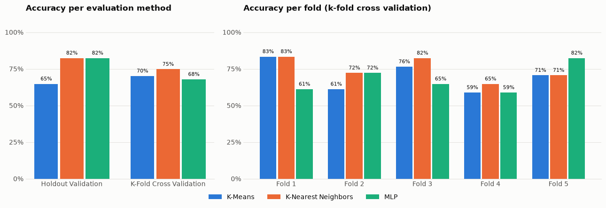
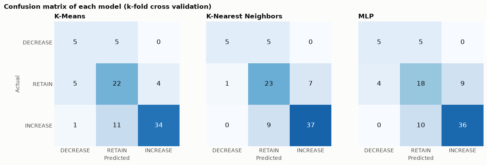
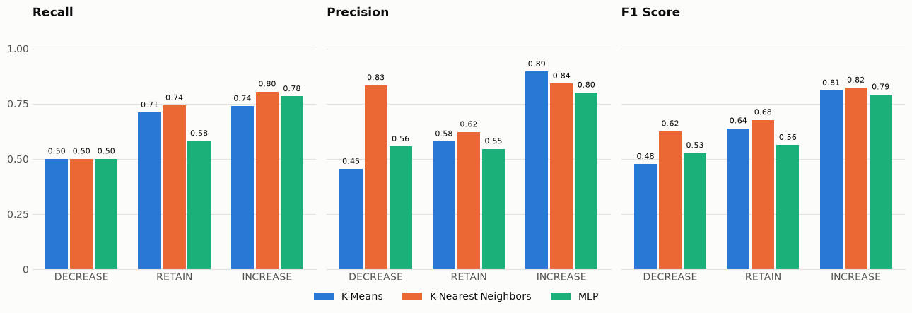

| Model | 5-fold accuracy | 5-fold | Holdout | Average F1 |
|---|---|---|---|---|
| K-Nearest Neighbors | 74.71% | 82.35% | 0.71 | |
| K-Means | 70.11% | 64.71% | 0.64 | |
| MLP | 67.82% | 82.35% | 0.63 |
5-fold accuracy counts all 87 provinces, each predicted once. Holdout accuracy is measured on 17 test provinces after training on the other 70. Average F1 is the mean of the F1 scores of the three classes, taken from the 5-fold predictions.
Each province is tagged under seven policies. Every policy compares the province against the national figure and returns one tag. The final class is the tag most of the seven policies give; a tie goes to RETAIN.
| Theory | What it asks |
|---|---|
| Lewis (1954), dual-sector model | Is there a large pool of poor workers earning close to subsistence, with little saving or job-seeking? |
| Myrdal (1957), cumulative causation | Is the province stuck in a vicious circle, or is it a prosperous center whose poverty is falling faster than the nation's? |
| Schultz (1961), human capital | Is online learning low where poverty is high? |
| Layne & Lee (2001), e-government stages | Do people get information from, and transact with, government online? |
| Röller & Waverman (2001), critical mass | Has basic connectivity reached the national level? |
| van Dijk (2005), resources and appropriation | Is there a gap in access, in productive use of the internet, or in both? |
| Sen (1999), capability approach | How many of five deprivations (education, health, income, participation, security) apply? |
The result is an uneven set of labels, which matters when reading the scores below:
| Class | Provinces | Share |
|---|---|---|
| INCREASE | 46 | 53% |
| RETAIN | 31 | 36% |
| DECREASE | 10 | 11% |
All features are standardized to zero mean and unit variance before training.


All inputs are from the Philippine Statistics Authority, downloaded from OpenSTAT.
The 87 units are 81 provinces, Isabela City, Cotabato City and the four districts of the National Capital Region, which has no provinces. Highly urbanized cities are counted inside their province.
Layne, K., & Lee, J. (2001). Developing fully functional E-government: A four stage model. Government Information Quarterly, 18(2), 122–136. https://doi.org/10.1016/S0740-624X(01)00066-1
Lewis, W. A. (1954). Economic development with unlimited supplies of labour. The Manchester School, 22(2), 139–191. https://doi.org/10.1111/j.1467-9957.1954.tb00021.x
Myrdal, G. (1957). Economic theory and under-developed regions. Gerald Duckworth.
Röller, L.-H., & Waverman, L. (2001). Telecommunications infrastructure and economic development: A simultaneous approach. American Economic Review, 91(4), 909–923. https://doi.org/10.1257/aer.91.4.909
Schultz, T. W. (1961). Investment in human capital. The American Economic Review, 51(1), 1–17. https://www.jstor.org/stable/1818907
Sen, A. (1999). Development as freedom. Oxford University Press.
van Dijk, J. A. G. M. (2005). The deepening divide: Inequality in the information society. Sage Publications. https://doi.org/10.4135/9781452229812